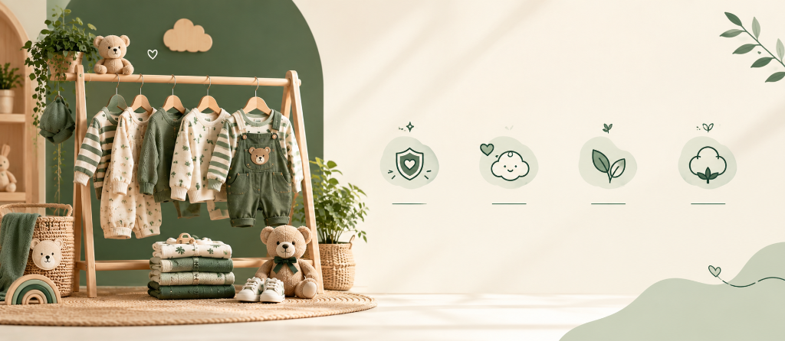
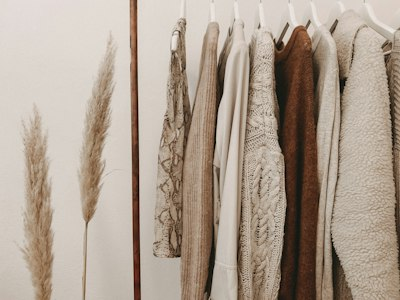

Wrapped in Nature's Gentle Embrace.
Cuddle Cub was founded by conscious parents on a quest for truly gentle, hypoallergenic organic baby clothes in calming woodland greens and warm creams. No loud synthetic dyes, no scratchy tags - only pure, breathable, heirloom comfort.
100%
Pure Organic Cotton
50k+
Happy Little Cubs
Zero
Harsh Dyes or Chemicals
The Soil-to-Snuggle Journey
Every garment is crafted with patience, intentionality, and love.

Organic Cotton Seed
Harvested without pesticides

Combed Soft Spin
Combed for zero prickle fibers

Botanical Earth Dyes
Forest and cream mineral pigments

Double Seam Lock
Heirloom strength for hand-me-downs
Tested For Newborn Skin Safety
Before any fabric touches a child, it passes rigid organic verification and laboratory allergen testing.
At Cuddle Cub, safety isn't an afterthought—it is woven into every thread. We partner with accredited global testing institutes to ensure every sleeper, romper, and knit piece feels like a soothing second skin.
100% GOTS Certified Organic
Every single cotton boll is grown without synthetic pesticides or GMO seeds, covering the entire chain from sustainable harvest to zero-effluent spinning.
OEKO-TEX® Standard 100 (Class 1)
Rigorously tested free from over 300 harmful toxins, nickel closures, formaldehyde, carcinogenic arylamines, and toxic heavy metals.
Eczema & Allergy Gentle
Clinically vetted for reactive, atopic dermatitis and sensitive infant skin. Featuring flatlock seams, tagless necklines, and ultra-breathable airflow.
What Makes Cuddle Cub Different

GOTS Certified Organic
From the seed in the soil to the final stitch, every garment complies with the Global Organic Textile Standard. No formaldehyde, no heavy metals, and no phthalates.

Earth & Forest Palette
Our colors draw inspiration from deep woodland pine needles, sunlight filtering through leaves, and rich warm country creams. Calm, soothing hues for serene bedtimes.

Pass-It-Down Quality
Children's fashion shouldn't be disposable. Our durable double-needle lock seams and quality wooden and coconut buttons mean pieces can be handed down to siblings and cousins.
Nurturing Little Cubs & The Planet They Will Inherit
Our environmental integrity is not an afterthought—it is engineered into every fiber, stitch, and compostable box. Touch or hover each pillar to explore our verifiable impact.
Verified Woodland Trees Planted
In partnership with certified global reforestation cooperatives, every garment purchased directly funds native oak, eucalyptus, and pine saplings that regenerate degraded forest canopies and wildlife habitats.
Toxic Effluent Dyebaths
Every earthy hue is achieved through mineral clay and botanical roots. Closed-loop water recycling ensures zero hazardous effluents ever touch local rivers or farming soil.
Raw Organic Fiber Purity
Cultivated with non-GMO seeds and zero synthetic neurotoxic pesticides, guaranteeing safe soil biodiversity and the softest touch against infant skin.
Circular Compostable Unboxing
All mailers are crafted from FSC-certified recycled kraft paper, printed with organic soy ink, and sealed with cornstarch tape that naturally biodegrades in garden compost.

Heirloom Quality Crafted For Generations
Every romper, dress, and pajama set is built to survive crawling, playground adventures, and endless wash cycles — ready to be lovingly handed down to siblings and future generations.